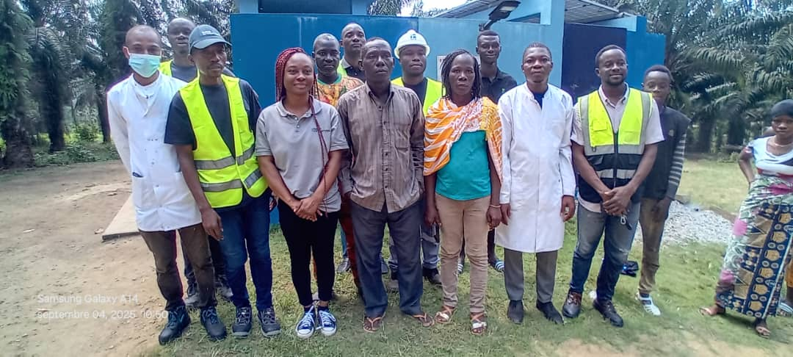

L'Excellence et la Rigueur au service de la Qualité
Notre Vision
Devenir le laboratoire d'analyse de référence en Afrique de l'Ouest, reconnu pour la **fiabilité de ses résultats**, son **innovation technologique** et son engagement à garantir la sécurité sanitaire et environnementale pour tous nos partenaires.
Nous aspirons à être un moteur de la conformité réglementaire et de l'amélioration continue de la qualité dans les secteurs de l'agroalimentaire, de la chimie, et de l'environnement.
Notre Historique : Une Croissance Axée sur la Rigueur
Fondé en **2015** par une équipe de chimistes et biologistes expérimentés, LPA est né de la volonté de combler un déficit critique en matière d'analyses de laboratoire indépendantes et certifiées dans la région.
Depuis nos modestes débuts, nous avons investi massivement dans l'équipement de pointe et dans la formation de notre personnel pour répondre aux **normes internationales (ISO 17025)**. Notre croissance rapide témoigne de la confiance que nos clients accordent à notre expertise et à notre impartialité.

Le siège du laboratoire LPA lors de son inauguration en 2015.
Mission et Valeurs Fondamentales
Notre Mission
Fournir des services d'analyse précis, rapides et conformes aux exigences réglementaires et industrielles. Nous aidons nos clients à sécuriser leurs produits, à protéger l'environnement et à prendre des décisions éclairées.
Nos Valeurs Clés
- **Rigueur Scientifique :** L'exactitude et la précision sont au cœur de chacun de nos tests.
- **Indépendance :** Nous garantissons une impartialité totale dans l'interprétation de nos résultats.
- **Innovation :** Investissement constant dans les nouvelles technologies d'analyse.
- **Engagement Client :** Un partenariat basé sur la transparence et l'écoute de vos besoins.
Notre Équipe Dirigeante
Mot du Président Directeur Général
M. Johnatan Guettia (Chimiste & Fondateur)
« La qualité n'est pas un acte, c'est une habitude. Chez LPA, cette conviction guide chaque membre de notre équipe. Notre mission va au-delà des chiffres : il s'agit de bâtir la confiance et d'assurer un environnement et des aliments plus sûrs pour nos communautés. Je suis fier de l'équipe d'experts que nous avons réunie pour atteindre cette excellence. »
Fort de **20 ans d'expérience** dans l'industrie chimique et l'assurance qualité, M. Guettia est le moteur de l'orientation stratégique et de la culture de l'excellence de LPA.